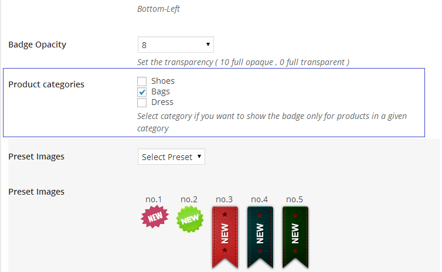

Woocommerce Products Badge Management - version 3.7
Define a Badge for your WooCommerce Store:
Single Product, Single Category Product , Multi Categories , All The Store and many other Options.
Select to display the Badge to catalog view , single product view , or both of them :
- Live Link : Click Here
- created: 03/01/2014
- latest update: 05/10/2014
- by: Gema75
- email: gema75@gema75.com
Thank you for purchasing the plugin.
Should you have any questions, leave a comment on the comment section of the plugin or write me directly to gema75@gema75.com
Installing the plugin
Installing via Wordpress admin
After you have purchased the plugin go to wordpress administration area then on PLUGINS , ADD NEW , UPLOAD and browse to the zip file you downloaded and click INSTALL
Activate 'WooCommerce Product Badges' through the 'Plugins' menu in WordPress
Using the plugin
Once installed go to the administration area and click on BADGES ;
Creating Badge
Create New Badge
Add a Title to recognise it for the future use .
General Settings for all Badge Types
NEWER THAN - Badge Life : the product added not more than X days ago on the woocommerce will have the badge.Info :If badge is not time related , leave empty.
POSITION : the position of the badge. you can also set the position by dragging the badge on the "quick preview"
On the right we see the "Quick preview" that shows in real time the changes done . You can easily place the badge by dragging it with the mouse
ImportantThe badge it is using position absolute , and for all the themes which are in responsive design it is recommended the position Top Left , so the badge will be responsive together with the product image . In case that the product image dimensions doesn't not change in responsive design , the badge can be positioned where ever you desire.
Create the Text Badge
TEXT COLOR : you can select the text color of the badge via a color picker
BACKGROUND COLOR : you can select the background color of the badge via a color picker
BADGE TEXT : you can set the text to be displayed on the badge
POSITION : the position of the badge. you can also set the position by dragging the badge on the "quick preview"
PADDING : the padding of the badge
RADIUS : if you like to have rounded corners set the values here
BADGE OPACITY : set the opacity of the badge , 0 is full transparent ( the badge will not be visible ) , 1 is fully visible
Creating Preset Image Badge
Create the image badge
You can create Badge using the present Preset images or with a custom image which you can upload and use as Badge
Creating Custom Image Badge
You can create Badge using the your custom images which you can upload and use as Badge
Assign Badge To Category
Once created the badge , it can be assigned to an existing product category .
Select the desired categories product to assign the badge created .

The badge will appear to all the products of the selected category.
Here live link in frontpage for the: Badge assigned to a category preset - image used
Here live link in frontpage for the: Badge assigned to a category custom Badge image used
Assign Badge To Single Product
To assing a Badge to a single product , You need to edit the single product and assing the Badge from the List .
Once done Update Product
Here is how it might look on the frontpage the single products with his own Badge :
Here live link in frontpage for the: Badge assigned to a single product with : Text Badge , Preset Image Badge , Custom Uploaded Image
Display Settings
Define where to display the badge - Selecting "Yes" or "No" to display the badge to catalog view and/or single product view
ImportantThe badge it is using position absolute , and in case that will be selected to display it in catalog view and also in single product view it is recommended the position "Top Left" , so the badge will be responsive together with the product image . In case that the product image have the same dimensions in catalog and single product view , the badge can be positioned where ever you desire.
Catalog view - Badge activated
Single product view - Badge activated
Frontpage View - Badge Types
Done that , here is how it might look on the frontpage
Product with text badge
Product with preset image badge
 Product with custom Uploaded image badge
Product with custom Uploaded image badge
Information Badge Rules
Sample 1
Badge with all the categories Selected - Time Limit 7 days .
This Badge overwrites all the existing Badges for the products of 7 days old.
Once the Badge expired will be displayed the other active badges .
Sample 2
Own product Badge Time Limit - empty = never expire
Product with Own badge older than 7 days will displayes his Own Badge .
NO CATEGORY SELECTED
Own product Badge overwrites the Category Badge .
Sample 3
Category Badge - Time Limit - empty = never expire
All the Products of the selected category/categories which doesn't have an own badge .
and are older than 7 days it displays the category badge.
Special Cases
First Be sure that you have removed the day limit for the badge .
If the Badge Day limit called "Newer Than " it is empty or 0 and the badge still doesn't appear than the case it is a little complicated but explained below how to solve .In same Cases the Badge doesn't Appear to a website .
This happen because the theme used have custom woocommerce files .
In those files the original hooks of the woocommerce plugin are not used .
As the Badge Plugin it is using one of those hooks which in your theme woo theme files may be it is missing .
Exist a way to fix it by adding a shortcode to the woo theme files .
The shortcode to be added it is the below :
<?php gema75_show_product_loop_new_badge (); ?>
You Need to identify the file which display the products and add this line before the title code .
Support and Updates
The plugin is self explanatory but should you require help or support let me know via the plugin`s comment section on the Codecanyon area, or write me directly to gema75@gema75.com
Update the Badge plugin to the last version downloaded from http://codecanyon.net/item/woocommerce-products-badge-management/6770699 code using the ftp client and replacing the files in the plugin folder.